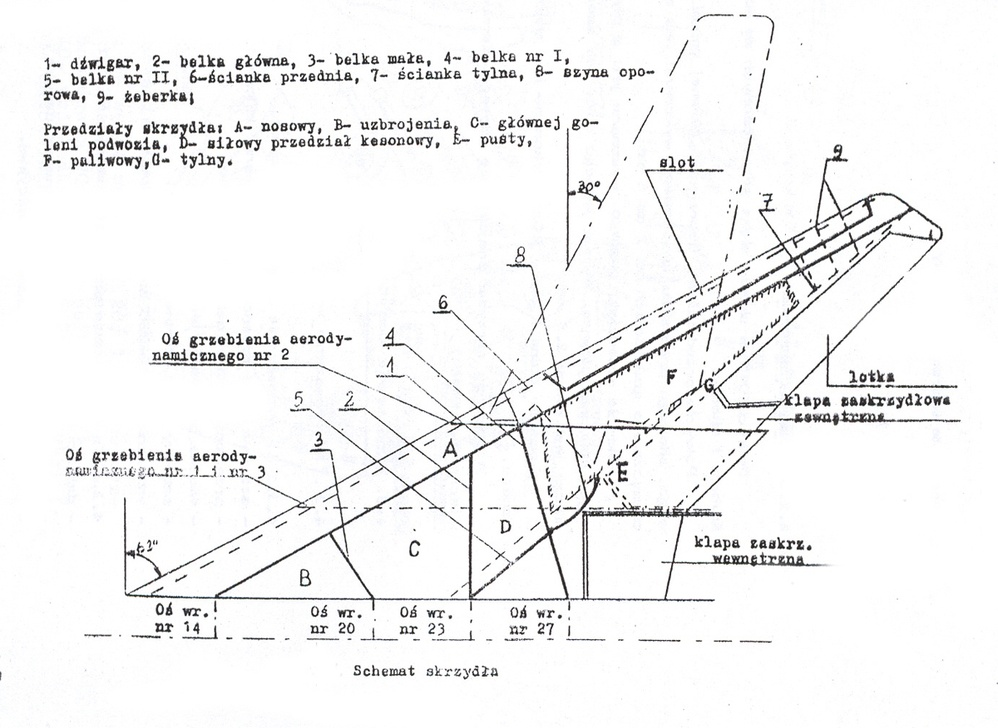
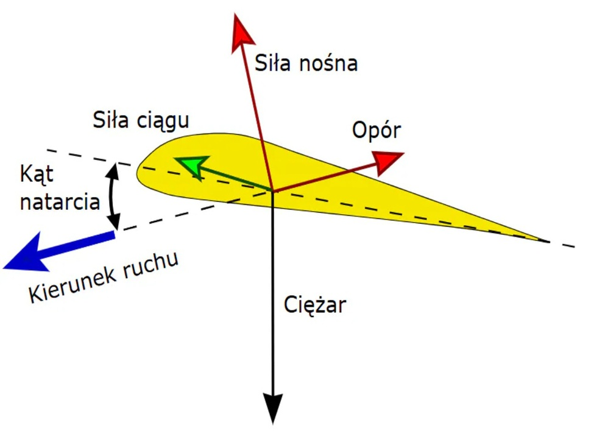

Skrzydło samolotu (płat nośny) – zespół płatowca, jeden z głównych elementów konstrukcyjnych stałopłatów (samolotów, szybowców) służący do wytwarzania siły nośnej. W przekroju skrzydło ma kształt profilu lotniczego. Na krawędzi skrzydła umieszczone są lotki i często urządzenia do zwiększenia siły nośnej (sloty, klapy). Skrzydło tworzy często zespół konstrukcyjny, w skład którego mogą wchodzić gondole silnikowe, podwozie, zbiorniki paliwa oraz pomieszczenia na ładunek użytkowy.
W dwupłatach skrzydła są połączone ze sobą stójkami i usztywnione taśmami lub cięgnami
